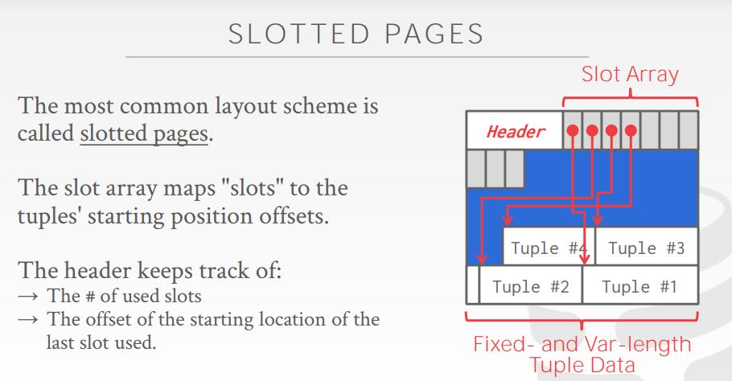
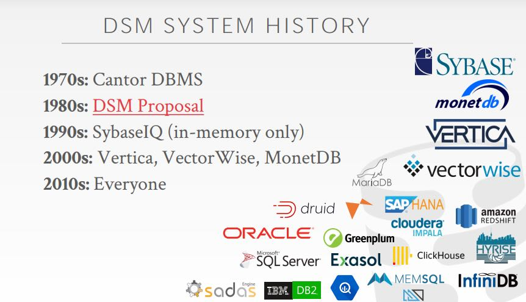

CMU DB: Database Storage
https://15445.courses.cs.cmu.edu/fall2020/schedule.html
数据库按照pages进行管理，通常page都是固定大小的，所以从page id映射到file block这个过程非常直接。
DBMS里面涉及到好几个page, 对于DBMS开发者来说通常只关心最后一个：
- Hardware Page(4KB)
- OS Page(4KB)
- Database Page(512B-16KB). 【我估计就是8KB, 16KB这样】
从page id映射到file block过程很直接，对于一个file来说没有只需要做些偏移计算就行，这种文件在DBMS里面叫做heap file(an unordered collection of pages) . 追踪free space则需要些工作，为此有两种方式追踪：
- linked list. 将free space使用链表的方式串起来
- page directory 使用类似目录的方式进行free space管理
链表的方式比较简单，但是search free space上比较费事，而page directory在管理的时候则需要做些工作。注意这些结构都是序列化在page里面的（可以和heap file在一起，也可以分开）。
对于一个database page来说，可以分为header + data两个部分，并且通常都是self contained的（除了table schema之外，这个是存储在外面的catalog table上的）。header可以包含下面几个部分：
- Page Size
- CheckSum
- DBMS Version
- Transaction Visibility
- Compression Information
在Data里面存储的就是Tuples. 在存储Tuple的时候需要考虑可变长度的对象，为此通常使用slotted page技术。header之后紧接一个上 slot array[这个长度估计可以固定]. 然后具体对象从block end开始存放，slot array里面只需要存放偏移即可。tuple也是self-contained的，对于变长数据头部会存放长度。对于超长的对象，比如size > page size的，这种情况称之为overflow. 我们可以在tuple里面存储page id，做一次间接引用。

列式存储早先的时候叫做decomposition storage model(DSM). 在2000年以前使用的还不多，但是在2010年之后大家就都开始使用了。
